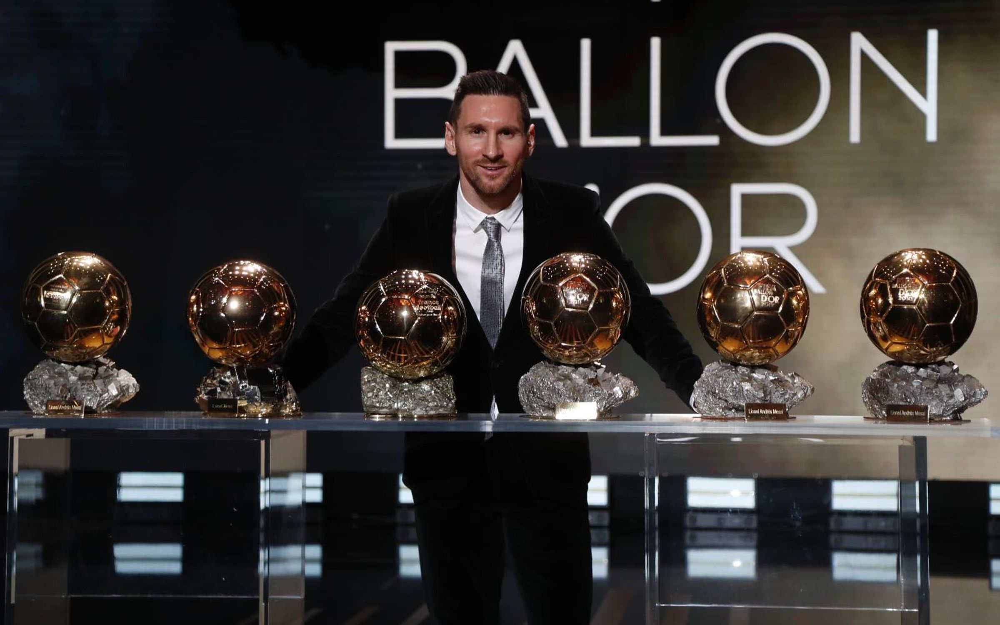
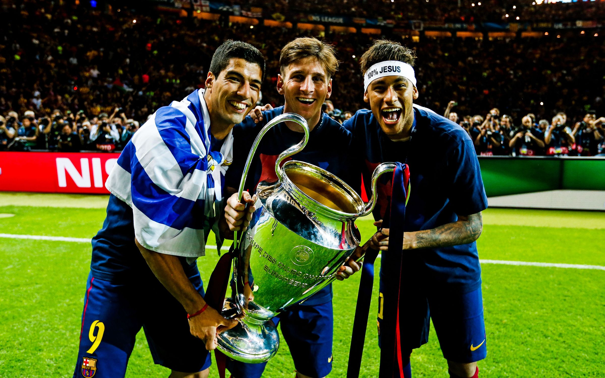

Fast Facts About Lionel Messi
- 1989 ‐ Born in Rosario, Argentina
- 1995 ‐ Joins local club team, Newell's Old Boys, in Rosario, Argentina.
- 2001 ‐ Joins Barcelona's youth academy La Masia
- 2004 ‐ Makes his official first team debut for FC Barcelona against Espanyol
- 2005 ‐ Signs first contract as a senior team player. Becomes the youngest player in Barcelona's history to score a goal for the senior team
- 2007 ‐ Establishes the Leo Messi Foundation, working to improve access to education and health care for children.
- 2008 ‐ Leads Argentina's soccer team to a gold medal at the Summer Olympics in Beijing.
- 2009 ‐ Wins a historic treble of La Liga, the Copa del Rey and the Champions League with Barcelona. Wins his first Ballon d'Or.
- 2010 ‐ Messi is announced as a UNICEF Goodwill Ambassador.
- 2012 ‐ Sets the all-time record for most goals scored in a single season for a major European football league, with 73 goals.
- 2013 ‐ Wins his fourth consecutive record breaking Ballon D'or award.
- 2014 ‐ Scores a hat-trick (three goals during a game), to become FC Barcelona's all-time leading scorer with 371 goals, eclipsing the record set by Paulino Alcantara, who scored 369 goals.
- 2019 ‐ Scores his 400th Spanish league goal in his 435th appearance. Wins his record breaking sixth Ballon d'Or.
Individual Honors

- 6X Winner Ballon d'or
- 6X The Best FIFA men's player
- 2X UEFA best player in Europe
- 10X Player of the year
- 19X Top scorer
Club & National Team Honors

- 10X Spanish League Champion
- 4X Champions League Winner
- 6X Spanish Cup Winner
- 8X Spanish Super Cup Winner
- 3X UEFA Super Cup Winner
- 3X Fifa Club World Cup Winner
- 1X Olympic Gold Medalist
- 1X Under-20 World Cup Champion
- 1X Spanish League Cup Winner
If you have time, you should watch a compilation of all his career goals as of 2019 on YouTube.